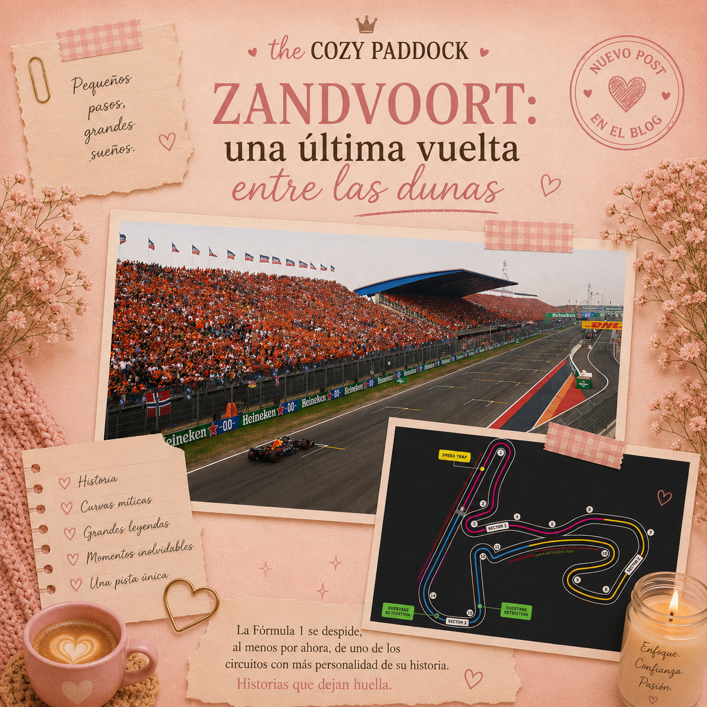

Zandvoort no sabía despedirse en silencio
Hay circuitos que se despiden con una última carrera tranquila, casi ceremonial. Una bandera a cuadros, algunas fotografías, un poco de nostalgia y la promesa de recordar los buenos momentos.
Zandvoort claramente no estaba interesado en nada de eso.
La última carrera del Gran Premio de los Países Bajos tuvo prácticamente de todo: lluvia antes de comenzar, un accidente que silenció a la marea naranja, una bandera roja, una segunda largada, problemas mecánicos, penalizaciones, estrategias diferentes y batallas que llegaron hasta las últimas vueltas.
Llegamos a este fin de semana hablando de una última vuelta entre las dunas. Quizás imaginábamos una despedida diferente.
Pero Zandvoort decidió recordarnos, una última vez, exactamente qué tipo de circuito era.
Una despedida demasiado temprana para Max
Confieso que esta parte de la carrera fue especialmente difícil para mí.
Soy fan de Max Verstappen y verlo abandonar en la segunda vuelta de la última carrera de Zandvoort fue uno de esos momentos en los que mi primera reacción fue pensar:
Había demasiadas razones para que doliera.
Zandvoort y Verstappen están profundamente unidos en la etapa moderna de este circuito. Cuando la Fórmula 1 regresó aquí, las tribunas se transformaron en una inmensa marea naranja y el Gran Premio de los Países Bajos se convirtió rápidamente en una de las carreras de casa más reconocibles del calendario.
Por eso resultó especialmente cruel que todo terminara tan pronto.
Max había comenzado la carrera desde la sexta posición y estaba intentando avanzar cuando tocó la línea blanca en la salida de la curva 3. El Red Bull perdió la parte trasera y terminó contra las barreras. Verstappen pudo salir del coche sin problemas, pero su último Gran Premio en Zandvoort había terminado después de apenas dos vueltas.
Y con él también desapareció una parte importante de la historia que muchos imaginábamos para aquel domingo.
Pero la carrera apenas comenzaba.
Y aunque confieso que me costó, seguí mirando.
Menos mal.
Antonelli convirtió la segunda salida en un espectáculo
El accidente de Verstappen provocó una bandera roja y nos llevó a una segunda largada.
Y Kimi Antonelli decidió aprovecharla.
Norris partía nuevamente desde la primera posición, pero Antonelli realizó una salida fantástica y consiguió arrebatarle el liderato en la primera curva.
A partir de ahí comenzó otra carrera.
El joven piloto de Mercedes consiguió abrir una pequeña ventaja mientras Norris intentaba mantenerse lo suficientemente cerca para atacar. Durante varias vueltas parecía que Kimi tenía todo bajo control, pero el comportamiento de sus neumáticos traseros comenzó a complicar su ritmo.
Norris se acercó.
Esperó.
Y finalmente atacó.
Después de recuperar la posición frente a Antonelli en la curva 1, todavía tenía otro obstáculo por delante: Lewis Hamilton, quien momentáneamente lideraba gracias a una estrategia diferente.
Norris también consiguió superarlo.
Y entonces comenzó a construir su victoria.
Norris se ganó la última de Zandvoort
Tengo que confesar otra cosa.
Por primera vez voté por Lando Norris como Driver of the Day.
Sí. Yo también me sorprendí.
Pero esta carrera se la ganó.
Norris no tuvo un domingo en el que simplemente salió desde la pole y desapareció al frente. Perdió el liderato, tuvo que recuperarlo, gestionó la estrategia y, una vez volvió al P1, construyó una ventaja que Antonelli ya no pudo reducir.
Terminó cruzando la meta 11.536 segundos por delante del Mercedes y consiguió su segunda victoria consecutiva. Después de la carrera, el propio Norris la describió como una de sus mejores victorias.
Y creo que tiene razones para sentirse así.
Porque hubo que trabajarla.
Quizás esa sea también una de las cosas bonitas de seguir este deporte: puedes tener favoritos, sufrir cuando abandonan y aun así reconocer cuando otro piloto hace una carrera extraordinaria.
Este domingo fue de Lando.
Y su nombre quedará para siempre unido a Zandvoort como el ganador de la última carrera de esta etapa del circuito.
Russell siendo Russell
Mientras Norris y Antonelli construían su propia batalla al frente, detrás de ellos George Russell tenía un problema considerable.
Dos Ferrari.
Lewis Hamilton y Charles Leclerc pasaron buena parte de la carrera persiguiendo al Mercedes, esperando una oportunidad para arrebatarle el último lugar del podio.
Pero Russell resistió.
Mercedes incluso tomó una decisión interesante en las últimas vueltas: permitió que Antonelli, que tenía neumáticos más frescos, pasara a su compañero para intentar acercarse a Norris.
Kimi no consiguió alcanzar al McLaren, pero Russell sí tuvo que defender nuevamente su posición frente a Ferrari.
Y lo hizo.
Al caer la bandera a cuadros, Hamilton terminó a menos de un segundo del Mercedes, con Leclerc inmediatamente detrás.
Así que nuestras notas de carrera pueden resumir esta parte de una manera bastante sencilla:
Russell siendo Russell.
No siempre necesita tener el coche más rápido. A veces simplemente encuentra la manera de estar ahí cuando llega el momento de repartir los trofeos.
Ferrari y una conversación que ya conocemos
Ferrari volvió a tener ritmo suficiente para estar cerca del podio, pero también nos dejó uno de esos momentos de radio que inmediatamente llaman la atención.
Hamilton pasó buena parte de la carrera detrás de Leclerc y llegó a pedir que Ferrari intercambiara las posiciones para permitirle atacar a Russell. Charles no parecía demasiado interesado en la idea.
Más adelante, cuando el equipo llamó a Leclerc a boxes, el monegasco inicialmente decidió permanecer en pista antes de detenerse finalmente una vuelta después.
Hamilton terminó cruzando la meta cuarto, seguido inmediatamente por su compañero, aunque no sin dejar después un comentario bastante claro sobre el tiempo que consideraba que habían perdido durante la carrera.
No fue un mal resultado para Ferrari.
Pero viendo lo cerca que terminaron del podio, probablemente tampoco sea uno que los deje completamente satisfechos.
Penalizaciones, banderas amarillas y una carrera que nunca terminó de calmarse
Si algo tuvo Zandvoort fue movimiento.
Arvid Lindblad y Franco Colapinto recibieron drive-through penalties por infracciones bajo bandera amarilla. Más adelante, Liam Lawson recibió diez segundos por un incidente con Pierre Gasly, aunque la sanción no fue suficiente para sacarlo de la séptima posición.
También hubo un Virtual Safety Car después de un incidente entre Carlos Sainz y Alex Albon, mientras que varios pilotos tuvieron carreras condicionadas por problemas mecánicos.
Oliver Bearman sufrió un fallo que obligó a realizar una vuelta de formación adicional antes de la segunda salida. Lance Stroll y Esteban Ocon también abandonaron, mientras Valtteri Bottas tuvo que retirar su Cadillac después de sufrir problemas durante la carrera.
Sergio Pérez, por su parte, había comenzado desde el pit lane y consiguió llevar el otro Cadillac hasta la meta en la decimoquinta posición.
Definitivamente, Cadillac sigue teniendo trabajo por hacer.
Lo que nos deja Zandvoort
Llegamos aquí sabiendo que este fin de semana sería diferente.
No importaba únicamente quién ganara.
Era la última carrera.
La última vez, al menos por ahora, que veríamos a los Fórmula 1 recorrer estas curvas peraltadas entre las dunas.
La última marea naranja.
La última salida hacia Tarzan.
La última bandera a cuadros.
Quizás por eso imaginábamos una despedida perfecta.
Tal vez una victoria del héroe local.
Tal vez una carrera tranquila que nos permitiera disfrutar cada una de esas 72 vueltas sabiendo que no volveríamos el próximo año.
Pero Zandvoort nunca fue ese tipo de circuito.
En su último domingo hubo lluvia, errores, una bandera roja, una segunda largada, adelantamientos, estrategias, penalizaciones, abandonos y batallas que llegaron prácticamente hasta la línea de meta.
Max Verstappen tuvo la despedida que ninguno de sus aficionados quería.
Kimi Antonelli volvió a demostrar que cada vez necesita menos presentaciones.
George Russell convirtió nuevamente la resistencia en un podio.
Ferrari estuvo tan cerca que seguramente se marchará pensando en lo que pudo haber sido.
Y Lando Norris hizo una carrera lo suficientemente buena como para conseguir algo que, personalmente, jamás pensé que ocurriría aquel domingo: que después del abandono de Max terminara votando por él como Driver of the Day.
Quizás no fue la despedida que imaginábamos.
Pero probablemente fue la despedida que mejor representaba a este lugar.
Llegamos a Zandvoort hablando de una última vuelta entre las dunas.
Ahora las dunas vuelven a quedarse en silencio.
No sabemos si será para siempre.
Pero sí sabemos algo.
Zandvoort no se fue en silencio.
Se fue siendo Zandvoort.
About The Cozy Paddock
The Cozy Paddock es un espacio donde la Fórmula 1 se vive desde una perspectiva más suave y femenina.
Creado para chicas que quieren entender, disfrutar y experimentar el deporte de una forma simple, acogedora y bonita.
The Cozy Paddock is a space where Formula 1 meets a softer, more feminine perspective.
Created for girls who want to understand, enjoy, and experience the sport in a simple, cozy, and beautiful way.
Autoras

Mery Ramirez

Sheyla Franco

Mayra Torreblanca